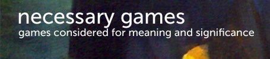
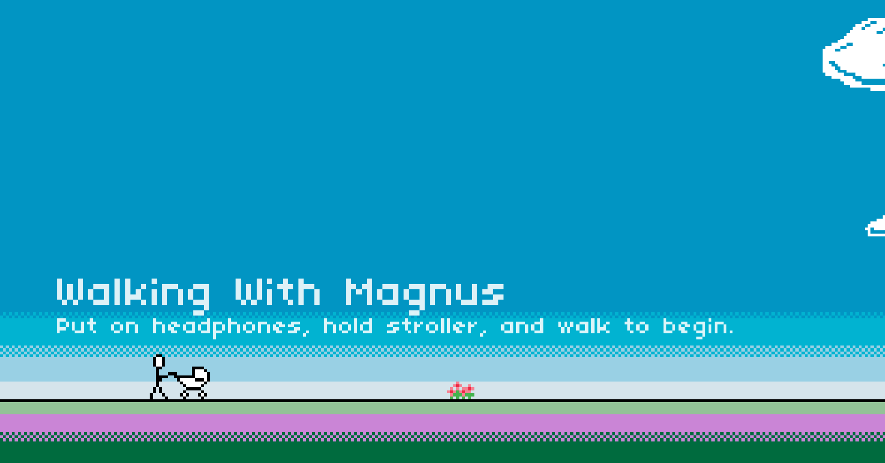
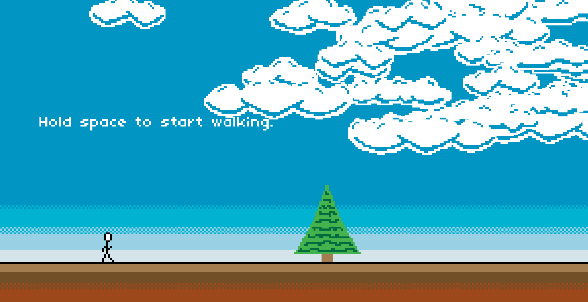

I worked with a developer and his studio to port several of his games from FlashPunk, which had been deprecated, to HTML5 using GameMaker Studio 2. Over a year I got a look at the full development process — regular meetings, peer reviews and bug fixing — which deepened my understanding of both the technical workflow and working on a team.

A game poem with strong symbolic elements, built as a walking simulator with more interactive input than the other title. It leans on scenery and sound design for its atmosphere. I helped port it from FlashPunk to HTML5, which was good practice at adapting a legacy project without losing what made it work.
github
I worked with a partner to port “Walk-or-Die”, a walking simulator its creator describes as “more poem than game.” The job was preserving that intent while moving it to GameMaker Studio 2, which taught me a lot about the engine and about unconventional, narrative-driven mechanics.
github